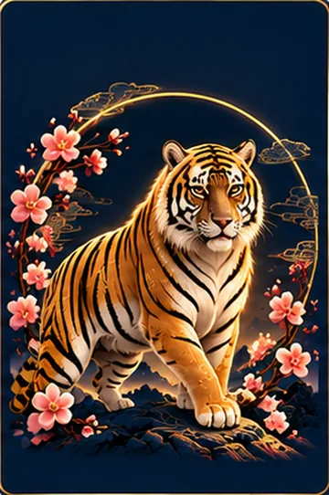
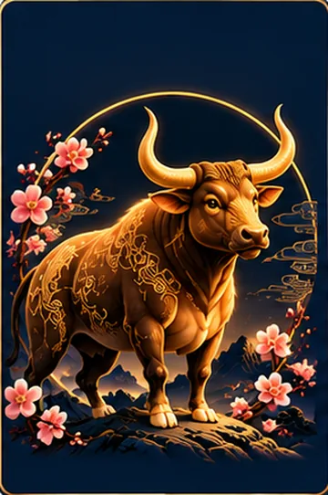
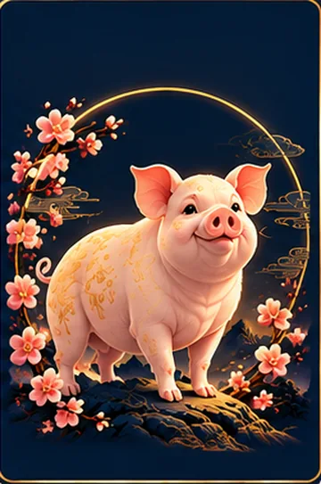

DISCOVER YOUR CHINESE ZODIAC
Discover Your Chinese Zodiac Sign
Uncover your personality, compatibility, lucky signs, and more based on your birth date.
- Personality Insights
- Love Compatibility
- Career Guidance
- Lucky Signs & Elements
វដ្តរាសី ១២ ឆ្នាំ
ស្វែងយល់ពីរាសីឆ្នាំចិនរបស់អ្នក
ស្វែងយល់ពីបុគ្គលិកលក្ខណៈ ភាពត្រូវគ្នា សំណាង និងព័ត៌មានផ្សេងៗ តាមថ្ងៃ ខែ ឆ្នាំកំណើតរបស់អ្នក។
- ការយល់ដឹងអំពីបុគ្គលិកលក្ខណៈ
- ភាពត្រូវគ្នាក្នុងស្នេហា
- ការណែនាំអាជីព
- សំណាង និងធាតុ
Find Your Chinese Zodiac Signស្វែងរករាសីរបស់អ្នក
Enter your birth date to discover your zodiac animal, element, lucky signs and more.បញ្ចូលថ្ងៃកំណើតរបស់អ្នក ដើម្បីស្វែងរកសត្វរាសី ធាតុ សំណាង និងច្រើនទៀត។
Todayថ្ងៃនេះ: October 7, 2026Today's Numberលេខថ្ងៃនេះ: —
Today's Chinese Zodiac Fortune
A quick look at how the day treats each of the 12 signs.
 Rat
Ordinary day
Rat
Ordinary day
Routine tasks — nothing special pulling for or against you today.
 Ox
Ordinary day
Ox
Ordinary day
Routine tasks — nothing special pulling for or against you today.
 Tiger
Great day
Tiger
Great day
Big decisions, bold moves, saying what's on your mind.
 Rabbit
Ordinary day
Rabbit
Ordinary day
Routine tasks — nothing special pulling for or against you today.
 Dragon
Ordinary day
Dragon
Ordinary day
Routine tasks — nothing special pulling for or against you today.
 Snake
Ordinary day
Snake
Ordinary day
Routine tasks — nothing special pulling for or against you today.
 Horse
Good day
Horse
Good day
Steady follow-through on something already in motion.
 Goat
Ordinary day
Goat
Ordinary day
Routine tasks — nothing special pulling for or against you today.
 Monkey
Take it easy
Monkey
Take it easy
Low-key tasks only. Worth skipping anything high-stakes if you can.
 Rooster
Ordinary day
Rooster
Ordinary day
Routine tasks — nothing special pulling for or against you today.
 Dog
Good day
Dog
Good day
Steady follow-through on something already in motion.
 Pig
Ordinary day
Pig
Ordinary day
Routine tasks — nothing special pulling for or against you today.
For entertainment and self-reflection only. Daily ratings are based on traditional Chinese zodiac day relationships and are not scientific predictions.
Explore the 12 Chinese Zodiac Animals
Choose an animal to learn about its personality, years, elements, lucky signs and compatibility.
Explore MyBirthSign Tools
Chinese Zodiac Compatibility
See how two birth dates traditionally match in love, friendship, and business.
Check Compatibility →Wedding Date Picker
Explore traditionally favorable wedding months based on both zodiac signs.
Find a Good Date →Business Partner Match
Compare two birth dates for traditional Chinese zodiac business compatibility.
Check Business Match →Zodiac Guide
Learn about the 12 animals, elements, lucky signs and more.
Explore Guide →
ជោគជតារាសីប្រចាំថ្ងៃនេះ
មើលរហ័សថាថ្ងៃនេះប្រព្រឹត្តចំពោះសត្វរាសីទាំង ១២ យ៉ាងណា។
- ជូត
ថ្ងៃធម្មតា
កិច្ចការប្រចាំថ្ងៃ — គ្មានអ្វីពិសេសគាំទ្រ ឬប្រឆាំងនឹងអ្នកថ្ងៃនេះទេ។
- ឆ្លូវ
ថ្ងៃធម្មតា
កិច្ចការប្រចាំថ្ងៃ — គ្មានអ្វីពិសេសគាំទ្រ ឬប្រឆាំងនឹងអ្នកថ្ងៃនេះទេ។
- ខាល
ថ្ងៃល្អខ្លាំង
ការសម្រេចចិត្តធំៗ ការផ្លាស់ប្តូរយ៉ាងក្លាហាន និងការនិយាយអ្វីដែលគិតក្នុងចិត្ត។
- ថោះ
ថ្ងៃធម្មតា
កិច្ចការប្រចាំថ្ងៃ — គ្មានអ្វីពិសេសគាំទ្រ ឬប្រឆាំងនឹងអ្នកថ្ងៃនេះទេ។
- រោង
ថ្ងៃធម្មតា
កិច្ចការប្រចាំថ្ងៃ — គ្មានអ្វីពិសេសគាំទ្រ ឬប្រឆាំងនឹងអ្នកថ្ងៃនេះទេ។
- ម្សាញ់
ថ្ងៃធម្មតា
កិច្ចការប្រចាំថ្ងៃ — គ្មានអ្វីពិសេសគាំទ្រ ឬប្រឆាំងនឹងអ្នកថ្ងៃនេះទេ។
- មមី
ថ្ងៃល្អ
ការបន្តធ្វើកិច្ចការដែលកំពុងដំណើរការស្រាប់ដោយស្ថិរភាព។
- មមែ
ថ្ងៃធម្មតា
កិច្ចការប្រចាំថ្ងៃ — គ្មានអ្វីពិសេសគាំទ្រ ឬប្រឆាំងនឹងអ្នកថ្ងៃនេះទេ។
- វក
ថ្ងៃគួរប្រុងប្រយ័ត្ន
កិច្ចការស្រាលៗប៉ុណ្ណោះ។ ប្រសិនបើអាច គួរជៀសវាងការសម្រេចចិត្តសំខាន់ៗ។
- រកា
ថ្ងៃធម្មតា
កិច្ចការប្រចាំថ្ងៃ — គ្មានអ្វីពិសេសគាំទ្រ ឬប្រឆាំងនឹងអ្នកថ្ងៃនេះទេ។
- ច
ថ្ងៃល្អ
ការបន្តធ្វើកិច្ចការដែលកំពុងដំណើរការស្រាប់ដោយស្ថិរភាព។
- កុរ
ថ្ងៃធម្មតា
កិច្ចការប្រចាំថ្ងៃ — គ្មានអ្វីពិសេសគាំទ្រ ឬប្រឆាំងនឹងអ្នកថ្ងៃនេះទេ។
សម្រាប់ការកំសាន្ត និងការឆ្លុះបញ្ចាំងខ្លួនប៉ុណ្ណោះ។ ការវាយតម្លៃប្រចាំថ្ងៃផ្អែកលើទំនាក់ទំនងថ្ងៃ-សត្វរាសីតាមប្រពៃណី ហើយមិនមែនជាការព្យាករណ៍វិទ្យាសាស្ត្រទេ។
ស្វែងយល់សត្វរាសីទាំង ១២
ជ្រើសរើសសត្វមួយ ដើម្បីស្វែងយល់អំពីបុគ្គលិកលក្ខណៈ ឆ្នាំកំណើត ធាតុ សំណាង និងភាពត្រូវគ្នា។
ឧបករណ៍របស់ MyBirthSign
ភាពត្រូវគ្នានៃរាសី
មើលថាតើថ្ងៃកំណើតពីរត្រូវគ្នាតាមប្រពៃណីយ៉ាងណាក្នុងស្នេហា មិត្តភាព និងអាជីវកម្ម។
ពិនិត្យភាពត្រូវគ្នា →ជ្រើសរើសថ្ងៃរៀបការ
ស្វែងរកខែមង្គលតាមប្រពៃណី ដោយផ្អែកលើរាសីទាំងពីរ។
ស្វែងរកថ្ងៃល្អ →ភាពសមស្របដៃគូអាជីវកម្ម
ប្រៀបធៀបថ្ងៃកំណើតពីរ សម្រាប់ភាពសមស្របក្នុងអាជីវកម្មតាមប្រពៃណី។
ពិនិត្យភាពសមស្របអាជីវកម្ម →មគ្គុទ្ទេសក៍រាសី
ស្វែងយល់អំពីសត្វទាំង ១២ ធាតុ សំណាង និងច្រើនទៀត។
ស្វែងយល់មគ្គុទ្ទេសក៍ →
Chinese Zodiac Compatibilityភាពត្រូវគ្នានៃរាសី
Compare two birthdays to discover traditional zodiac compatibility in love, friendship, business and more.ប្រៀបធៀបថ្ងៃកំណើតពីរ ដើម្បីស្វែងយល់ភាពត្រូវគ្នាតាមប្រពៃណីក្នុងស្នេហា មិត្តភាព អាជីវកម្ម និងច្រើនទៀត។
Traditional compatibility is for entertainment and cultural interest, not a prediction of how a relationship will go.ភាពត្រូវគ្នាតាមប្រពៃណីសម្រាប់ការកំសាន្ត និងវប្បធម៌ប៉ុណ្ណោះ មិនមែនជាការព្យាករណ៍ពីទំនាក់ទំនងទេ។
Why Choose MyBirthSign?
Traditional Chinese zodiac interpretation, made simple.
Accurate Zodiac Calculation
Based on Lunar New Year boundaries and Chinese zodiac traditions.
Detailed Personality Insights
Learn about strengths, challenges and traditional traits.
Love & Relationship Guidance
Explore traditional zodiac compatibility.
Career & Business Compatibility
Compare traditional zodiac strengths.
Easy to Use
Simple tools designed for quick answers.
Featured Zodiac Guides
- Compatibility
Zodiac Compatibility Guide: Who Matches Who
Find your best match in love, friendship, and business.
Read More → - Elements
The Five Elements Explained
Wood, Fire, Earth, Metal and Water, and how they shape each sign.
Read More → - Basics
How to Calculate Your Chinese Zodiac Sign
Why the Lunar New Year matters when you were born in January or February.
Read More → - Personality
What Your Chinese Zodiac Sign Says About You
Explore the traditional traits of each zodiac animal.
Read More →
How MyBirthSign Works
- Enter Your Birth Date
- Discover Your Zodiac Animal
- Explore Your Element
- Discover Compatibility & Guidance
Chinese zodiac signs follow a traditional 12-year cycle. Because the zodiac year follows the Lunar New Year calendar, people born in January or February should check their exact birth date.
Your birth year maps to one of 12 zodiac animals and one of 5 elements, following the traditional East Asian zodiac cycle. The animal reflects personality traits that are said to repeat every 12 years, while the element adds a layer of flavor that repeats every 10 years — together giving a unique 60-year combination (for example, "Earth Dragon" or "Water Tiger").
Check My Zodiac →How the 12-Year Zodiac Cycle Works
The zodiac repeats every 12 years.
Your birth year determines the traditional zodiac animal, but people born around January or February should check the Lunar New Year boundary.
Rat → Ox → Tiger → Rabbit → Dragon → Snake → Horse → Goat → Monkey → Rooster → Dog → Pig → Rat
Check Your Zodiac →The Five Chinese Zodiac Elements
 Wood
Wood Fire
Fire Earth
Earth Metal
Metal Water
Water
The five elements add another layer to the traditional zodiac system.
Explore Chinese Zodiac Elements →From the MyBirthSign Blog

Chinese Zodiac Daily Fortune — October 7, 2026
Today's Chinese zodiac fortune for all 12 animals, with the best signs of the day and signs needing extra care.
Read More →
Chinese Zodiac Daily Fortune — October 6, 2026
Today's Chinese zodiac fortune for all 12 animals, with the best signs of the day and signs needing extra care.
Read More →
Chinese Zodiac Daily Fortune — October 4, 2026
Today's Chinese zodiac fortune for all 12 animals, with the best signs of the day and signs needing extra care.
Read More →
Your Journey with the Stars
Explore the wisdom of the Chinese zodiac and discover more about love, career, compatibility, and harmony.
Start Your Zodiac Journey →ហេតុអ្វីជ្រើសរើស MyBirthSign?
ការបកស្រាយរាសីតាមប្រពៃណី ធ្វើឱ្យងាយស្រួល។
ការគណនារាសីត្រឹមត្រូវ
ផ្អែកលើព្រំដែនចូលឆ្នាំចន្ទគតិ និងប្រពៃណីរាសី។
ការយល់ដឹងលម្អិតអំពីបុគ្គលិកលក្ខណៈ
ស្វែងយល់អំពីចំណុចខ្លាំង ឧបសគ្គ និងលក្ខណៈតាមប្រពៃណី។
ការណែនាំស្នេហា និងទំនាក់ទំនង
ស្វែងយល់ភាពត្រូវគ្នាតាមប្រពៃណី។
ភាពសមស្របការងារ និងអាជីវកម្ម
ប្រៀបធៀបចំណុចខ្លាំងតាមប្រពៃណី។
ងាយស្រួលប្រើ
ឧបករណ៍សាមញ្ញ សម្រាប់ចម្លើយរហ័ស។
មគ្គុទ្ទេសក៍រាសីពិសេស
- ភាពត្រូវគ្នា
មគ្គុទ្ទេសក៍ភាពត្រូវគ្នានៃរាសី
ស្វែងរកគូដែលសមបំផុតក្នុងស្នេហា មិត្តភាព និងអាជីវកម្ម។
អានបន្ថែម → - ធាតុ
ធាតុទាំងប្រាំ ពន្យល់ងាយៗ
ឈើ ភ្លើង ដី ដែក និងទឹក និងរបៀបដែលវាជះឥទ្ធិពលដល់សត្វនីមួយៗ។
អានបន្ថែម → - មូលដ្ឋាន
របៀបគណនារាសីឆ្នាំរបស់អ្នក
ហេតុអ្វីបានជាចូលឆ្នាំចន្ទគតិសំខាន់ ប្រសិនបើអ្នកកើតខែមករា ឬកុម្ភៈ។
អានបន្ថែម → - បុគ្គលិកលក្ខណៈ
រាសីរបស់អ្នកប្រាប់អ្វីអំពីអ្នក
ស្វែងយល់អំពីលក្ខណៈតាមប្រពៃណីរបស់សត្វរាសីនីមួយៗ។
អានបន្ថែម →
របៀបដែល MyBirthSign ដំណើរការ
- បញ្ចូលថ្ងៃកំណើតរបស់អ្នក
- ស្វែងរកសត្វរាសីរបស់អ្នក
- ស្វែងយល់ធាតុរបស់អ្នក
- ស្វែងយល់ភាពត្រូវគ្នា និងការណែនាំ
រាសីវិលជុំតាមវដ្ត ១២ឆ្នាំ។ ដោយសារឆ្នាំរាសីតាមប្រតិទិនចូលឆ្នាំចន្ទគតិ អ្នកដែលកើតក្នុងខែមករា ឬកុម្ភៈ គួរពិនិត្យថ្ងៃកំណើតជាក់លាក់របស់ខ្លួន។
ឆ្នាំកំណើតរបស់អ្នកត្រូវនឹងសត្វនិមិត្តសញ្ញាមួយក្នុងចំណោម១២ និងធាតុមួយក្នុងចំណោម៥ ដោយដើរតាមវដ្តនិមិត្តសញ្ញាអាស៊ីបូព៌ាបែបប្រពៃណី។ សត្វនិមិត្តសញ្ញាបង្ហាញពីគុណសម្បត្តិបុគ្គលិកលក្ខណៈដែលគេនិយាយថាវិលត្រឡប់មកវិញរៀងរាល់១២ឆ្នាំ ចំណែកធាតុបន្ថែមស្រទាប់រស់ជាតិដែលវិលត្រឡប់មកវិញរៀងរាល់១០ឆ្នាំ — រួមគ្នាផ្តល់ជាការផ្សំពិសេសមួយរយៈពេល៦០ឆ្នាំ (ឧទាហរណ៍ "រោងដី" ឬ "ខាលទឹក")។
ពិនិត្យរាសីរបស់ខ្ញុំ →របៀបដែលវដ្តរាសី១២ឆ្នាំដំណើរការ
រាសីវិលជុំរៀងរាល់ ១២ឆ្នាំម្តង។
ឆ្នាំកំណើតរបស់អ្នកកំណត់សត្វរាសីតាមប្រពៃណី ប៉ុន្តែអ្នកដែលកើតក្នុងខែមករា ឬកុម្ភៈ គួរពិនិត្យថ្ងៃចូលឆ្នាំចន្ទគតិ។
ជូត → ឆ្លូវ → ខាល → ថោះ → រោង → ម្សាញ់ → មមី → មមែ → វក → រកា → ច → កុរ → ជូត
ពិនិត្យរាសីរបស់អ្នក →ធាតុទាំងប្រាំនៃរាសី
- ឈើ
- ភ្លើង
- ដី
- លោហធាតុ
- ទឹក
ធាតុទាំងប្រាំបន្ថែមស្រទាប់មួយទៀតដល់ប្រព័ន្ធរាសីតាមប្រពៃណី។
ស្វែងយល់ធាតុទាំងប្រាំ →ពីប្លុករបស់ MyBirthSign
ជោគជតារាសីប្រចាំថ្ងៃ — ថ្ងៃទី៧ ខែតុលា ឆ្នាំ២០២៦
ជោគជតារាសីថ្ងៃនេះសម្រាប់សត្វទាំង ១២ រួមទាំងសត្វដែលសំណាងល្អបំផុត និងសត្វដែលត្រូវប្រុងប្រយ័ត្ន។
អានបន្ថែម →ជោគជតារាសីប្រចាំថ្ងៃ — ថ្ងៃទី៦ ខែតុលា ឆ្នាំ២០២៦
ជោគជតារាសីថ្ងៃនេះសម្រាប់សត្វទាំង ១២ រួមទាំងសត្វដែលសំណាងល្អបំផុត និងសត្វដែលត្រូវប្រុងប្រយ័ត្ន។
អានបន្ថែម →ជោគជតារាសីប្រចាំថ្ងៃ — ថ្ងៃទី៤ ខែតុលា ឆ្នាំ២០២៦
ជោគជតារាសីថ្ងៃនេះសម្រាប់សត្វទាំង ១២ រួមទាំងសត្វដែលសំណាងល្អបំផុត និងសត្វដែលត្រូវប្រុងប្រយ័ត្ន។
អានបន្ថែម →
ដំណើររបស់អ្នកជាមួយផ្កាយ
ស្វែងយល់ប្រាជ្ញារាសី ហើយស្គាល់បន្ថែមអំពីស្នេហា អាជីព ភាពត្រូវគ្នា និងសុខដុមរមនា។
ចាប់ផ្តើមដំណើររាសីរបស់អ្នក →